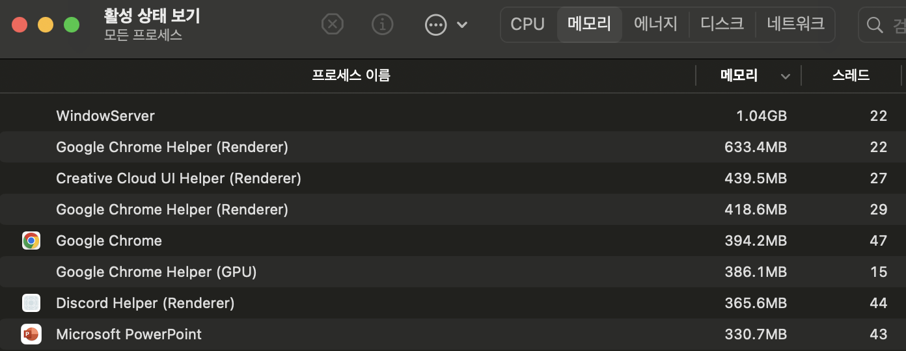
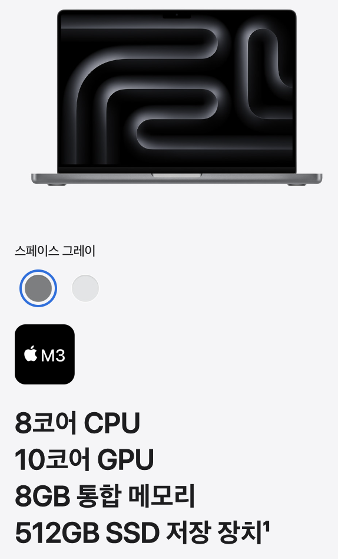

<meta charset="utf-8">
<html lang="ko">
<head>
    <link rel="stylesheet" type="text/css" href="./../style.css" />
    <title>[CS 지식] 프로세스 vs 스레드 차이점 정리 (feat. 프로그램이 실행되는 과정)</title>
</head>
<body id="tt-body-page" class="">
<div id="wrap" class="wrap-right">
    <div id="container">
        <main class="main ">
            <div class="area-main">
                <div class="area-view">
                    <div class="article-header">
                        <div class="inner-article-header">
                            <div class="box-meta">
                                <h2 class="title-article">[CS 지식] 프로세스 vs 스레드 차이점 정리 (feat. 프로그램이 실행되는 과정)</h2>
                                <div class="box-info">
                                    <p class="category">? Archive/...2024</p>
                                    <p class="date">2024-09-10 21:52:52</p>
                                </div>
                            </div>
                        </div>
                    </div>
                    <hr>
                    <div class="article-view">
                        <div class="contents_style">
                            <p style="text-align: center;" data-ke-size="size18"><b><span style="font-family: 'Nanum Gothic'; letter-spacing: 0px; color: #000000;">Goal </span></b></p>
<p style="text-align: center;" data-ke-size="size16"><span style="font-family: 'Nanum Gothic'; letter-spacing: 0px; color: #000000;">- 프로그램과 프로세스의 차이에 대해서 이해한다.</span></p>
<p style="text-align: center;" data-ke-size="size16"><span style="font-family: 'Nanum Gothic'; letter-spacing: 0px; color: #000000;">- 하드웨어 관점 스레드와 소프트웨어 관점 스레드의 차이에 대해서 이해한다.&nbsp;</span></p>
<p style="text-align: center;" data-ke-size="size16"><span style="font-family: 'Nanum Gothic'; color: #000000;">- 프로세스와 스레드의 차이점에 대해서 이해한다.</span></p>
<hr contenteditable="false" data-ke-type="horizontalRule" data-ke-style="style2" />
<h2 style="text-align: left;" data-ke-size="size26"><b><span style="font-family: 'Nanum Gothic'; color: #000000;">#1.1 프로그램</span></b></h2>
<p style="text-align: left;" data-ke-size="size16"><span style="font-family: 'Nanum Gothic'; color: #000000;"><span style="background-color: #333333; color: #dddddd;">프로그램 [Program]</span> 이란 <b>"컴퓨터가 일련의 작업을 처리하기 위한 계획서"</b> 한 마디로 그냥 코드 덩어리이다.</span></p>
<p style="text-align: left;" data-ke-size="size16"><span style="font-family: 'Nanum Gothic'; color: #000000;">우리가 일상에서 사용하는 카카오톡, 디스코드, 워드 등 모두 프로그램의 일종이다.&nbsp;</span></p>
<p style="text-align: left;" data-ke-size="size16"><span style="font-family: 'Nanum Gothic'; color: #000000;">하지만 프로그램은 사용자가 실행하기 이전에는 그저 디스크에 존재하는 코드의 집합일 뿐이다.&nbsp;</span></p>
<p><figure class="imageblock alignLeft" width="209" height="61" >
    <span data-lightbox="lightbox">
        
    </span>
    <figcaption></figcaption>
</figure></p>
<p data-ke-size="size16">&nbsp;</p>
<h2 data-ke-size="size26"><b><span style="font-family: 'Nanum Gothic'; color: #000000;">#1.2 프로세스</span></b></h2>
<p data-ke-size="size16"><span style="font-family: 'Nanum Gothic'; color: #000000;">이러한 프로그램 코드 덩어리를 사용자가 실제로 실행하면 프로세스가 된다.&nbsp;</span></p>
<p data-ke-size="size16"><span style="font-family: 'Nanum Gothic'; color: #000000;"><span style="background-color: #333333; color: #dddddd;">프로세스</span>는 <b>실행중인 프로그램 상태</b>를 뜻하는 용어이다.&nbsp;</span></p>
<p data-ke-size="size16"><span style="font-family: 'Nanum Gothic'; color: #000000;">프로그램이 실행되기 위해선 2가지 단계를 거쳐야만 한다.&nbsp;</span></p>
<p data-ke-size="size16">&nbsp;</p>
<p data-ke-size="size16"><span style="font-family: 'Nanum Gothic'; color: #dddddd; background-color: #333333;">1. RAM 메모리 적재</span></p>
<p data-ke-size="size16"><span style="font-family: 'Nanum Gothic'; color: #000000;">프로그램이 프로세스로 변하기 이전 (실행되기 전) 에 프로그램 내부의 코드와 데이터들을 RAM 에 적재하는 과정을 거친다.&nbsp;</span></p>
<p data-ke-size="size16">&nbsp;</p>
<p data-ke-size="size16"><span style="font-family: 'Nanum Gothic'; color: #dddddd; background-color: #333333;">2. CPU 자원 할당</span></p>
<p data-ke-size="size16"><span style="font-family: 'Nanum Gothic'; color: #000000;">프로그램이 메모리에 적재된 이후, 실제로 실행하는 도중 필요한 컴퓨터 자원들이 필요하다. </span></p>
<p data-ke-size="size16"><span style="font-family: 'Nanum Gothic'; color: #000000;">운영체제는 "스케줄링 기법"을 사용해 프<span style="font-family: 'Nanum Gothic'; color: #000000; text-align: start;">로그램이 필요한 메모리를 적절히 분배하여, </span>실행 도중 필요한 컴퓨터 자원을 효율적으로 공유할 수 있도록 해준다.</span></p>
<p data-ke-size="size16">&nbsp;</p>
<p data-ke-size="size16"><span style="font-family: 'Nanum Gothic'; color: #000000;">* Mac OS의 Activity Monitor , Window OS의 작업관리자를 통해 현재 메모리에 올라가 있는 프로세스들의 상태를 확인 가능하다.</span></p>
<p><figure class="imageblock alignLeft" >
    <span data-lightbox="lightbox">
        
    </span>
    <figcaption></figcaption>
</figure></p>
<hr contenteditable="false" data-ke-type="horizontalRule" data-ke-style="style2" />
<h2 data-ke-size="size26"><b><span style="font-family: 'Nanum Gothic'; color: #000000;">#2.1 하드웨어 스레드&nbsp;</span></b></h2>
<p data-ke-size="size16"><span style="font-family: 'Nanum Gothic'; color: #000000;">스레드에 대해 정리하기 전에, <span style="background-color: #333333; color: #dddddd;">하드웨어 관점에서의 스레드와 소프트웨어 관점의 스레드의 차이</span>점에 대해 구분해야 한다.&nbsp;</span></p>
<p data-ke-size="size16"><span style="font-family: 'Nanum Gothic'; color: #000000;">보통 컴퓨터 견적을 맞출 때 세부사항을 보면 4코어 8스레드, 하이퍼 스레딩 같은 용어를 심심치 않게 볼 수 있다.&nbsp;</span></p>
<p data-ke-size="size16"><span style="font-family: 'Nanum Gothic'; color: #000000;">여기서 말하는 스레드는 하드웨어 관점의 스레드이며, 예시로 4코어 8스레드면 1개의 코어가 2개의 스레드 작업을 동시에 처리할 수 있음을 나타낸다.</span></p>
<p data-ke-size="size16"><span style="font-family: 'Nanum Gothic'; color: #000000;">이러한 기술을 <span style="background-color: #333333; color: #dddddd;">SMT(하이퍼스레딩)</span> 혹은 <span style="background-color: #333333; color: #dddddd;">멀티스레딩</span> 기술 이라고 부른다.&nbsp;</span></p>
<p><figure class="imageblock alignLeft" width="439" height="227" >
    <span data-lightbox="lightbox">
        
    </span>
    <figcaption>출처 : 다나와</figcaption>
</figure></p>
<p data-ke-size="size16">&nbsp;</p>
<p data-ke-size="size16"><span style="font-family: 'Nanum Gothic'; color: #000000;">물론 모든 cpu가 하이퍼스레딩 기술을 채택하고 있는 것은 아니다.&nbsp;</span></p>
<p data-ke-size="size16"><span style="font-family: 'Nanum Gothic'; color: #000000;">대표적으로 애플의 ARM 맥북은 (M1~M3) 별도의 하이퍼스레딩 기술을 사용하지 않는다.</span></p>
<p><figure class="imageblock alignLeft" width="328" height="542" >
    <span data-lightbox="lightbox">
        
    </span>
    <figcaption>출처 : 애플 공식 홈페이지</figcaption>
</figure></p>
<p data-ke-size="size16">&nbsp;</p>
<p data-ke-size="size16"><span style="font-family: 'Nanum Gothic'; color: #000000;">CPU 코어와 스레드에 관한 내용은 다음 유튜브 영상을 참고하면 이해하는데 도움이 된다.</span></p>
<p data-ke-size="size16"><span style="font-family: 'Nanum Gothic';"><a href="https://www.youtube.com/watch?v=_dhLLWJNhwY" target="_blank" rel="noopener&nbsp;noreferrer">https://www.youtube.com/watch?v=_dhLLWJNhwY</a></span></p>
<p data-ke-size="size16">&nbsp;</p>
<h2 data-ke-size="size26"><b><span style="font-family: 'Nanum Gothic';">#2.2 소프트웨어 스레드</span></b></h2>
<p data-ke-size="size16"><span style="font-family: 'Nanum Gothic';">소프트웨어 관점의 스레드는 <span style="background-color: #333333; color: #dddddd;">"프로세스 내부에서 실행되는 작업의 단위"</span>를 뜻한다.&nbsp;</span></p>
<p data-ke-size="size16"><span style="font-family: 'Nanum Gothic';">따라서 <b>프로세스는 반드시 하나의 스레드를 포함한다.&nbsp;</b></span></p>
<p data-ke-size="size16"><span style="font-family: 'Nanum Gothic';">프로세스 내부의 스레드는 <b>프로세스가 제공하는 동일한 메모리 공간을 공유</b>하며, <b>스레드 마다 고유한 스택 영역을 보유</b>한다.</span></p>
<p data-ke-size="size16"><span style="font-family: 'Nanum Gothic';">만약 한 프로세스에 2개 이상의 스레드를 할당하고 싶다면 프로그래머가 직접 위치시켜 주어야 한다. </span></p>
<p data-ke-size="size16">&nbsp;</p>
<p data-ke-size="size16"><a href="https://novlog.tistory.com/entry/Java-%EB%A9%94%EB%AA%A8%EB%A6%AC-%EA%B5%AC%EC%A1%B0-%EC%8A%A4%ED%83%9C%ED%8B%B1-%EB%B3%80%EC%88%98-%EB%A9%94%EC%84%9C%EB%93%9C-%EC%99%84%EB%B2%BD-%EC%A0%95%EB%A6%AC" target="_blank" rel="noopener"><span style="font-family: 'Nanum Gothic';">[Java] 메모리 구조 관련 게시글</span></a></p>
<p data-ke-size="size16">&nbsp;</p>
<p data-ke-size="size16"><span style="font-family: 'Nanum Gothic'; color: #000000;">다음은 한 프로세스에 2개의 스레드를 할당한 자바 코드 예시이다.&nbsp;</span></p>
<p data-ke-size="size16"><span style="font-family: 'Nanum Gothic'; color: #000000;">(자바 스레드에 관한 사용법에 대한 내용은 포함하지 않는다.)</span></p>
<pre id="code_1725972257308" class="java" data-ke-language="java" data-ke-type="codeblock"><code>public class MyThread extends Thread{
    @Override
    public void run() {
        System.out.println(Thread.currentThread().getName() + ": run()");
    }
}</code></pre>
<p data-ke-size="size16">&nbsp;</p>
<p data-ke-size="size16"><span style="font-family: 'Nanum Gothic'; color: #000000;">프로세스는 반드시 하나의 스레드를 포함해야 하기에 기본적으로 main Thread 가 먼저 실행된다.&nbsp;</span></p>
<pre id="code_1725972421942" class="java" data-ke-language="java" data-ke-type="codeblock"><code>public class MyThreadMain {
    public static void main(String[] args) {

        // Thread.currentThread() : 현재 실행중인 스레드 출력
        // main Thread 는 항상 가장 먼저 실행된다.
        // 프로세스가 실행되기 위해서는 최소한 하나의 스레드는 필요하기 때문

        System.out.println(Thread.currentThread().getName() + ": main() start");

        MyThread myThread1 = new MyThread();
        MyThread myThread2 = new MyThread();
        myThread1.start();
        myThread2.start();

        System.out.println(Thread.currentThread().getName() + ": main() end");


    }
}</code></pre>
<p data-ke-size="size16">&nbsp;</p>
<p data-ke-size="size16"><span style="font-family: 'Nanum Gothic'; color: #000000;">스레드는 실행 순서를 보장하지 않는다.</span></p>
<pre id="code_1725972462278" class="java" data-ke-language="java" data-ke-type="codeblock"><code>main: main() start
Thread-0: run()
main: main() end
Thread-1: run()</code></pre>
<p data-ke-size="size16">&nbsp;</p>
<p data-ke-size="size16"><span style="font-family: 'Nanum Gothic'; color: #000000;">이처럼 <b>한 프로세스 내부에 여러개의 스레드가 존재하는 상황</b>을 <span style="background-color: #333333; color: #dddddd;">"멀티 스레드"</span> 라고 한다.&nbsp;</span></p>
<p data-ke-size="size16"><span style="font-family: 'Nanum Gothic'; color: #000000;">굳이 멀티 스레드가 필요한가 의문이 들 수 있으나, 하나의 프로그램 또한 그 안에서 동시에 여러가지의 작업을 처리해야 하는 상황이 빈번하게 발생한다.&nbsp;</span></p>
<p data-ke-size="size16"><span style="font-family: 'Nanum Gothic'; color: #000000;">유튜브 어플리케이션을 예시로 들자면, 만약 유튜브가 단일 스레드 프로세스로 구성되어 있었다면 우리가 영상을 시청하는 도중에는 댓글을 달 수 없었을 것이다.&nbsp;</span></p>
                        </div>
                        <br/>
                        <div class="tags">
                            
                        </div>
                    </div>
                </div>
            </div>
        </main>
    </div>
</div>
</body>
</html>
